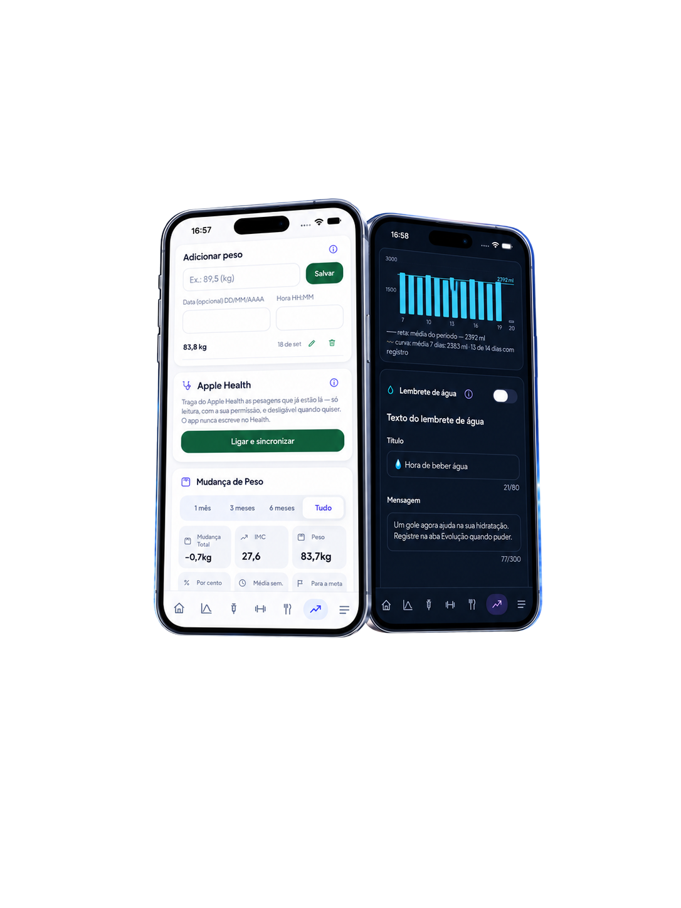
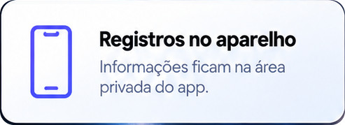

Documento público
Política de Privacidade
Em poucas palavras: o PepDozy existe para acompanhar você, e tudo o que você registra é seu. Não temos conta nem login próprios, servidor próprio, publicidade, analytics ou telemetria. Seus registros ficam na área privada do app, no seu iPhone, e não chegam até o desenvolvedor. Você decide quando compartilhar um arquivo e com quem. Algumas funções opcionais usam serviços externos, e explicamos cada uma ao longo desta página.
1. Para que o PepDozy serve, e o que ele não faz
O PepDozy é um companheiro de registro pessoal: um lugar para você organizar peso, alimentação, água, atividades, como se sentiu, anotações, fotos, medições de glicemia e, se quiser, registros de GLP-1.
O módulo de GLP-1 é opcional. Na versão 1.1.6, ele reúne o seu histórico e uma estimativa matemática separada por molécula, calculada no aparelho a partir dos registros. Essa estimativa não é uma medição do seu organismo nem uma orientação de dose. O app não calcula estoque.


2. O que fica guardado no seu aparelho
Dependendo das funções que você usar, o app pode guardar no seu iPhone:
- seus registros de GLP-1, se você usar o módulo: substância, marca, quantidade, data, horário, local e observações;
- nome (se quiser informar), idade, sexo, altura, peso, meta de peso, nível de atividade e preferências;
- água, exercícios, como você se sentiu, refeições, nutrientes, alimentos que você cadastrou, quantidades em unidade, gramas ou mililitros quando disponíveis e as metas nutricionais que você informar;
- medições de glicemia que você digita em mg/dL, feitas num medidor externo, com data, horário e um contexto opcional escrito por você;
- anotações livres, respostas opcionais a perguntas guiadas e revisões semanais que você escreve no Meu Diário;
- fotos de progresso, salvas na pasta privada do app;
- textos, horários e preferências dos lembretes e notificações locais;
- o registro do seu consentimento e indicadores de backup;
- peso lido do Apple Health, só se você ativar a integração e autorizar a leitura.
Nada disso vira perfil publicitário. O PepDozy não vende dados, e seus registros não ficam disponíveis para o desenvolvedor.
O que você escreve no Meu Diário fica guardado no seu iPhone e não é enviado automaticamente a nenhum serviço externo. Compartilhar é sempre uma escolha sua.
No módulo de GLP-1, o histórico mostra separadamente o que já foi registrado e o que está agendado, e você pode personalizar a próxima data. A estimativa aparece por molécula, sem somar substâncias diferentes nem tratá-las como equivalentes. A tela de estoque continua ausente.
Se você atualizou de uma versão anterior, o app pode conservar campos legados de estoque no armazenamento local e no backup, só para que nenhum dado seu se perca sem você saber. A versão atual não mostra tela de estoque, não mexe nesses campos ao criar um registro e não calcula saldo, capacidade ou consumo.
Para ajudar você a enxergar seus dados, o app faz cálculos descritivos, como IMC, totais e médias nutricionais, contagens, intervalos entre datas e resumos das medições selecionadas. A estimativa do módulo de GLP-1 é um recurso à parte e usa os registros de cada molécula.
O diário de glicemia é opcional e guarda as medições que você digita, feitas num medidor externo, com data, horário e contexto opcional. Ele não importa glicose do Apple Health nem recebe dados de sensores. O gráfico mostra só os pontos que você registrou, com filtros e histórico, sem linhas ligando os pontos, regressões ou tendências calculadas. O app não estima valores entre uma medição e outra, não reconstrói a metabolização individual e não prevê valores futuros. O resumo considera apenas as medições da seleção: a média não representa a glicemia do dia inteiro, e um período sem registro não vale zero. O PepDozy não mede glicose, não classifica resultados, não diagnostica e não orienta tratamento. Para isso, conte com o profissional de saúde que acompanha você.
3. Apple Health e permissões
A integração com o Apple Health solicita apenas permissão de leitura de peso e não escreve dados. Você pode retirar essa permissão quando quiser, nos Ajustes do iOS.
Notificações, câmera e Fotos só são pedidas quando a função que você está usando precisa delas. Se você negar uma permissão, o app não procura outro jeito de coletar aquele dado, e tudo o que não depende dela continua funcionando.
4. Assinaturas e recursos conectados
As assinaturas funcionam pelo StoreKit, o sistema de compras do iOS. Ele conversa diretamente com a Apple para mostrar produtos, preços na sua moeda, ofertas, elegibilidade e transações, e também para comprar ou restaurar assinaturas.
Seus registros não fazem parte dessa conversa. Dados de cartão e de pagamento não passam pelo app e não ficam disponíveis para o desenvolvedor. O PepDozy recebe do StoreKit só as informações de produto e transação necessárias para liberar os recursos da sua assinatura.
O que a Apple faz com esses dados segue as políticas e os termos da própria Apple.
Alimentação: o registro de alimentos usa o catálogo que já vem no aparelho e os alimentos que você cadastra, sem consulta pela internet. Esta versão não oferece análise de foto de alimento nem consulta externa de alimentos. Câmera e Fotos servem só para as suas fotos de progresso.
Versões de teste anteriores: algumas builds distribuídas pelo TestFlight ofereciam análise de foto no aparelho e consulta opcional ao Open Food Facts. As refeições registradas por esses caminhos continuam guardadas no aparelho e no backup manual, com a fonte indicada, e você pode editá-las ou apagá-las. Linhas de catálogo pessoal já importadas ficam sem uso nesta versão e saem quando você usa “Apagar meus dados”.
Siri e Atalhos: o que acontece na conversa com a Siri depende das configurações e dos serviços da Apple. O PepDozy recebe apenas um rascunho com alimento, quantidade e unidade, e abre a revisão no app. O rascunho não é gravado automaticamente no diário: ele só entra depois que você confere.
5. Onde seus dados ficam e como são protegidos
Seus registros ficam no espaço privado do aplicativo, no seu iPhone. O app usa a proteção completa de arquivos do iOS, e a eficácia dessa proteção depende de o aparelho ter código de bloqueio.
Se quiser, você pode ativar uma camada extra de proteção local, sempre com a sua confirmação. Essa migração precisa ser concluída dentro do app: só atualizar a versão não significa que todos os registros já foram migrados.
Seus dados ficam guardados até você apagá-los no app ou remover o aplicativo. Como o PepDozy não tem conta nem servidor, não existe cópia remota, e nem o suporte consegue consultar, corrigir ou apagar seus registros. Eles ficam só com você.
6. Backups, relatórios e exportações
O PepDozy não envia arquivos por conta própria. Relatórios, planilhas, backups, fotos e diagnósticos só saem do app quando você inicia a exportação e escolhe o destino na folha de compartilhamento do iOS.
- Você pode exportar o backup dos seus registros com ou sem senha. Com senha, ele é cifrado no próprio aparelho com AES-256-GCM, usando uma chave derivada da senha. A senha não fica guardada e não pode ser recuperada, então anote-a num lugar seguro.
- Sem senha, o backup fica legível. PDF, planilhas e pacote de fotos também podem sair como arquivo legível ou protegido por senha. O arquivo protegido é cifrado no aparelho com AES-256-GCM e abre em Menu > Gerenciar meus dados > Abrir arquivo protegido. Aqui também a senha não é guardada e não pode ser recuperada. O arquivo legível não é criptografado pelo PepDozy: guarde e compartilhe esses arquivos só em lugares e com pessoas de sua confiança.
- Suas medições de glicemia, com data, horário e contexto, fazem parte do backup de registros e, quando houver medições válidas já realizadas, da planilha
glicemia.csvna exportação que você iniciar. Na opção legível, a planilha é texto comum e não é criptografada pelo app. - No PDF, as seções Glicemia registrada (mg/dL), resumo alimentar, gráficos de alimentação e metas nutricionais informadas vêm ligadas por padrão. Cada uma tem seu próprio interruptor, e você pode desligar qualquer uma antes de exportar; desligada, ela não entra no arquivo. A seção de glicemia traz as medições do período escolhido, com data, horário e contexto, e um resumo descritivo, sem interpretação clínica. A alimentação aparece só como consolidado do período, sem a lista do que você comeu.
- Como essa mudança no padrão do PDF é importante, a versão 1.1.6 pede que você aceite de novo (consentimento versão 7). O novo aceite preserva todos os seus registros e não repete o cadastro inicial. Não há nova coleta, nenhum envio e nenhuma exportação automática.
- O PDF reúne as seções que você selecionar e pode mostrar quantas fotos existem e as datas delas, sem incluir as imagens. Exercícios, curva de quantidade estimada e saldo de estoque não entram nesse relatório. As fotos têm exportação própria.
- Vai trocar, restaurar ou apagar o aparelho? Use o backup e as exportações do próprio app e confira se os arquivos chegaram ao destino escolhido. As fotos têm exportação própria e não fazem parte do backup de registros.
- Suas anotações do Meu Diário fazem parte do backup manual de registros. A exportação própria do diário inclui somente os registros que você selecionar, em arquivo legível.
- Pesos importados do Apple Health não entram no backup do PepDozy. No outro aparelho, você pode consultá-los de novo pela integração, se estiverem disponíveis e você autorizar a leitura.
- Depois que um arquivo sai do app, quem guarda a cópia é o destino que você escolheu. Para apagá-la, é lá que você apaga.
7. Ver, corrigir, exportar e apagar seus dados
Você pode consultar e corrigir seus registros no app, exportar os arquivos oferecidos e apagar seus dados em Menu → Gerenciar meus dados. Também pode remover permissões nos Ajustes do iOS ou apagar o aplicativo.
No diário de glicemia, você também pode excluir uma medição de cada vez. Se uma data válida passar a ficar no futuro, por um ajuste do relógio ou uma restauração, ela continua guardada no aparelho e no backup, mas não aparece no gráfico, no resumo, no PDF nem no CSV enquanto estiver no futuro.
Cópias que você já salvou fora do app precisam ser apagadas no lugar onde foram guardadas.
8. Este site
Estas páginas são simples e estáticas. O PepDozy não coloca nelas formulários, login, analytics, pixels, publicidade nem cookies de rastreamento. A hospedagem é feita pelo GitHub Pages, que registra e armazena endereços IP de visitantes por segurança, inclusive de quem não está conectado a uma conta GitHub. Esse tratamento técnico segue a documentação e a Política de Privacidade do GitHub. Visitar estas páginas não envia ao desenvolvedor nenhum registro guardado no seu aplicativo.
9. Contato
Ficou com alguma dúvida sobre privacidade ou precisa de ajuda com o app? Escreva para pepdozy@gmail.com. Vamos ler sua mensagem com atenção.
Para proteger você, não envie por e-mail doses, exames, fotos clínicas, documentos, senhas, dados bancários ou qualquer informação de saúde que não seja indispensável para descrever o problema.